X-Men '97 é uma série de animação americana criada por Beau DeMayo para o serviço de streaming Disney+, baseada na equipe de super-heróis da Marvel Comics, os X-Men. É um Revival de X-Men (1992–1997), continuando a história dos X-Men que enfrentam novos desafios após a perda de seu líder, o Professor X. X-Men '97 é produzido pela Marvel Animation, com DeMayo como roteirista principal nas duas primeiras temporadas e Jake Castorena como diretor supervisor.
Ray Chase, Jennifer Hale, Alison Sealy-Smith, Cal Dodd, JP Karliak, Lenore Zann, George Buza, AJ LoCascio, Holly Chou, Isaac Robinson-Smith, Matthew Waterson, Ross Marquand e Adrian Hough estrelam como membros dos X- Mens. Sealy-Smith, Dodd, Zann, Buza e Hough reprisaram seus papéis da série original, assim como Christopher Britton. As estrelas da série original Catherine Disher, Chris Potter, Alyson Court, Lawrence Bayne e Ron Rubin voltaram para dar voz a novos personagens.
O revival foi discutido pela primeira vez em junho de 2019 e anunciado formalmente em novembro de 2021, com DeMayo e Castorena introduzidos. Chase Conley e Emi Yonemura também dirigiram episódios. DeMayo foi demitido do cargo de roteirista principal em março de 2024, após concluir o trabalho nas duas primeiras temporadas. A série é o primeiro projeto X-Men da Marvel Studios desde que a empresa recuperou os direitos cinematográficos e televisivos dos personagens. A animação foi produzida pelo Studio Mir e Tiger Animation e é uma versão modernizada do estilo da série original.
X-Men '97 estreou em 20 de março de 2024, com seus dois primeiros episódios. O resto da primeira temporada de dez episódios foi lançado semanalmente até 15 de maio. Uma segunda temporada está em produção e uma terceira em desenvolvimento.
Sinopse
X-Men '97 continua a história de X-Men: The Animated Series (1992–1997). Em ambas as séries, os mutantes são pessoas que nascem com habilidades sobre-humanas que geralmente se manifestam durante a puberdade. Os X-Men são uma equipe de super-heróis mutantes fundada pelo Professor Charles Xavier para proteger mutantes e humanos. No final da série animada , Xavier quase morre em uma tentativa de assassinato e é levado ao espaço para ser curado pelo alienígena Império Shi'ar . X-Men '97 começa um ano depois e vê os X-Men enfrentando novos desafios sem Xavier, sob a liderança de seu ex-adversário Magneto. Tal como acontece com a série original, X-Men '97 combina ação, drama estilo novela e exploração de tópicos sérios.
Elenco e Personagens
Ray Chase como Scott Summers/Ciclope: O líder de campo mutante dos X-Men cujos olhos emitem poderosos feixes de energia concussiva. Ciclope está preparado para liderar os X-Men após a perda de Charles Xavier, antes de Magneto assumir esse papel. Chase substitui o dublador original do Ciclope, Norm Spencer , que morreu em 2020. Chase não tinha visto a série original quando fez o teste e recebeu clipes e referências para a voz do personagem para basear sua atuação. Após ser escalado, ele assistiu à série original e ouviu entrevistas de Spencer.
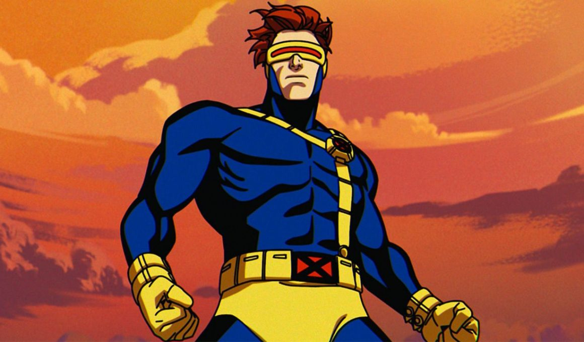
Scott Summers/Ciclope
Jennifer Hale como Jean Grey: Uma poderosa mutante telepática e telecinética que é casada com Ciclope, e já foi hospedeira da entidade cósmica Força Fênix. Seu relacionamento com Ciclope é complicado pelos sentimentos de Wolverine por ela. Hale, que anteriormente dublou o personagem na série de televisão Wolverine e os X-Men, substitui a dubladora da série original Catherine Disher, e baseou sua atuação na voz de Disher. Hale também dá voz a Madelyne Pryor/Goblin Queen, um clone mutante de Jean criado pelo Senhor Sinistro. Madelyne dá à luz o filho de Ciclope, Nathan, o que complica ainda mais seu relacionamento com Jean. Hale usou um tom ligeiramente diferente ao dar voz a Madelyne para separá-la de Jean.
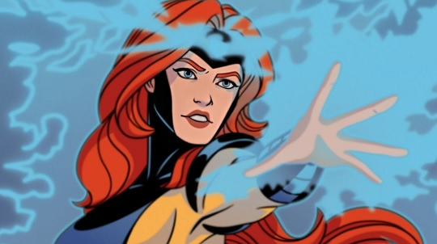
Jean Grey
Alison Sealy-Smith como Ororo Munroe/Tempestade: Uma poderosa mutante que pode controlar o clima e é descrita como uma "deusa". Sealy-Smith repete seu papel da série original, e também dá voz ao Adversário, um demônio que se alimenta de emoções negativas.
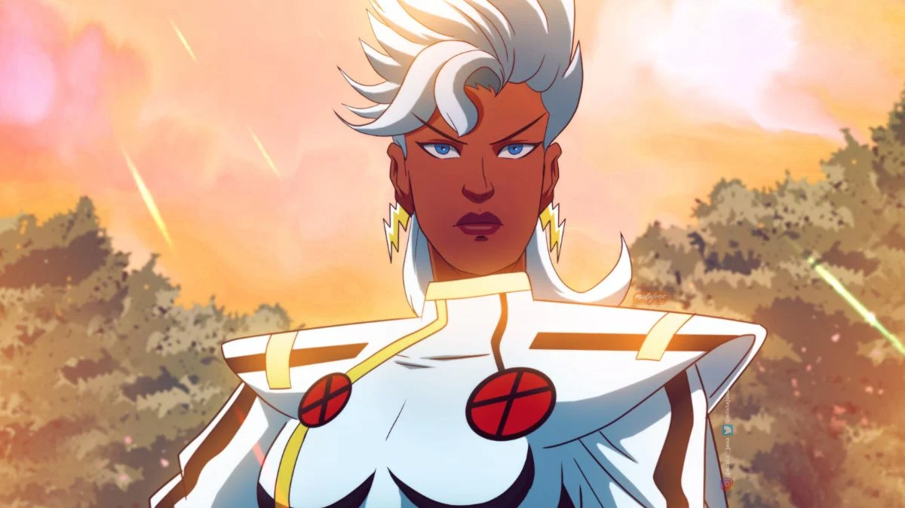
Ororo Munroe/Tempestade
Cal Dodd como Logan/Wolverine: Um mutante impetuoso com um fator de cura regenerativo, sentidos aguçados, garras retráteis e um esqueleto com adamantium. Dodd repete seu papel da série original.
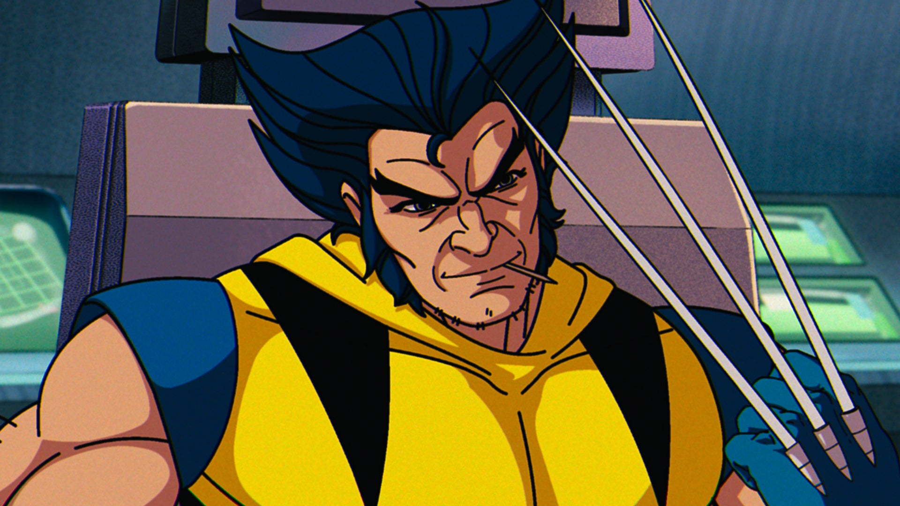
Logan/Wolverine
JP Karliak como Metamorfo: Um metamorfo mutante que pode mudar sua voz e aparência para a de qualquer pessoa. O design básico de Morph foi atualizado em relação à série original para ser "pálido, sem pelos e com características vazias", semelhante à versão do personagem vista na história em quadrinhos " Age of Apocalypse " e na história em quadrinhos Exiles. Morph se identifica como não-binário, mas a série não usa explicitamente esse termo, pois não era comum na década de 1990. Transformações de Morph na primeira temporada incluem Xavier, Jean Grey, Angel, Blob, Lady Deathstryke, Colossus, Psylocke, Sabretooth, Spiral, Illyana Rasputina/Magik/Darkchylde, Mercúrio, Juggernaut, Hulk , Senhor Sinistro, Sauron, e Senhor Fantástico. Karliak substitui o dublador original de Morph, Ron Rubin. Ele também dá voz a William Stryker, um ministro cristão anti-mutante, e ao super-herói Hulk.
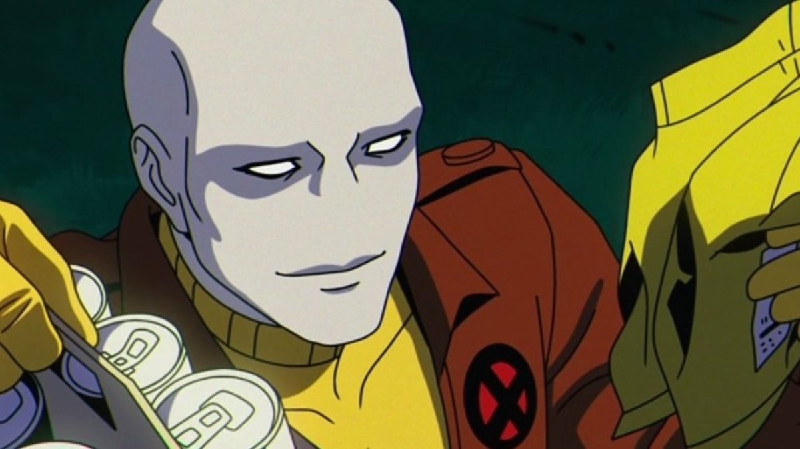
Metamorfo/Morph
Lenore Zann como Vampira: Uma mutante que absorve as memórias, poderes e energia daqueles que toca. A série revela que Vampira teve um relacionamento romântico secreto com Magneto quando ela era mais jovem, causando atrito em seu relacionamento atual com Gambit. Zann repete seu papel da série original.
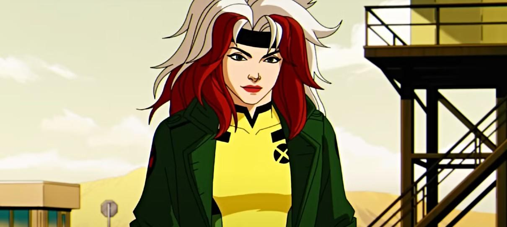
Anna Marie/Vampira
George Buza como Dr. Henry "Hank" McCoy/Fera: Um gênio mutante de pelo azul com força e agilidade sobre-humanas. Buza repete seu papel da série original.
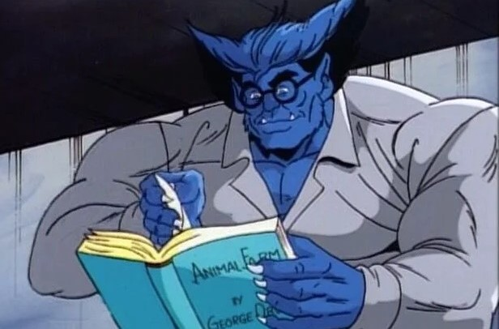
Dr. Henry "Hank" McCoy/Fera
AJ LoCascio como Remy LeBeau/Gambit: Um mutante e ex-ladrão que pode carregar objetos com energia cinética explosiva, incluindo suas cartas de baralho características. As ações de Gambit nos primeiros episódios - incluindo usar um top curto e tirar a camisa, e seu relacionamento com Vampira - tinham a intenção de tornar o público querido para ele antes de sua morte no final do quinto episódio. LoCascio substitui o dublador original de Gambit, Chris Potter.
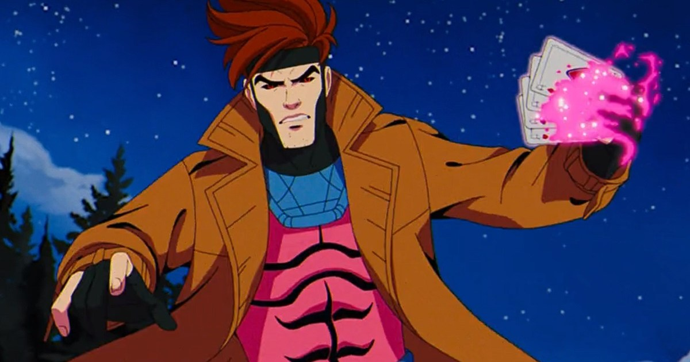
LeBeau/Gambit
Holly Chou como Jubilation Lee/Jubileu: O membro mais jovem dos X-Men que pode criar explosões semelhantes a fogos de artifício. Chou substitui a dubladora original de Jubilee, Alyson Court, que disse anteriormente que não repetiria o papel e preferiria que um ator asiático-americano o assumisse. Em vez disso, Court dá voz a Abscissa, uma versão mais antiga de Jubilee do mundo dos videogames "Motendo".
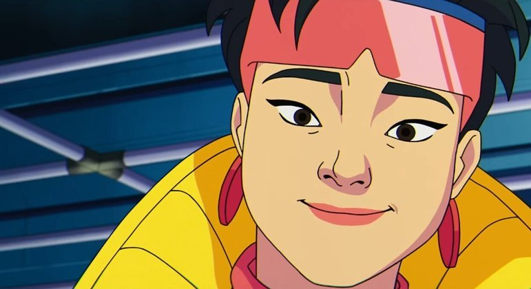
Jubilation Lee/Jubileu
Isaac Robinson-Smith como Lucas Bishop: Um mutante de um futuro distópico com a capacidade de absorver energia cinética e redirecioná-la em explosões contundentes. Robinson-Smith substitui o dublador original de Bishop, Philip Akin . Robinson-Smith também dá voz a T'Chaka/Pantera Negra, o rei de Wakanda . A aparência do personagem cria um aparente erro de continuidade com a série animada Quarteto Fantástico (1994–1996) em que ele morre.
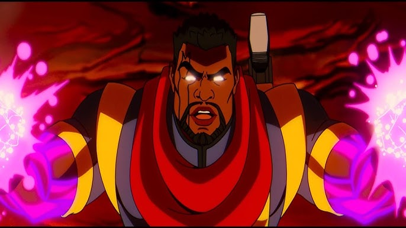
Lucas Bishop
Matthew Waterson como Erik "Magnus" Lehnsherr/Magneto: Um poderoso mutante que controla o magnetismo. Magneto recebe o controle dos X-Men no último testamento de Charles Xavier. Waterson substitui o dublador original de Magneto, David Hemblen, que morreu em 2020.
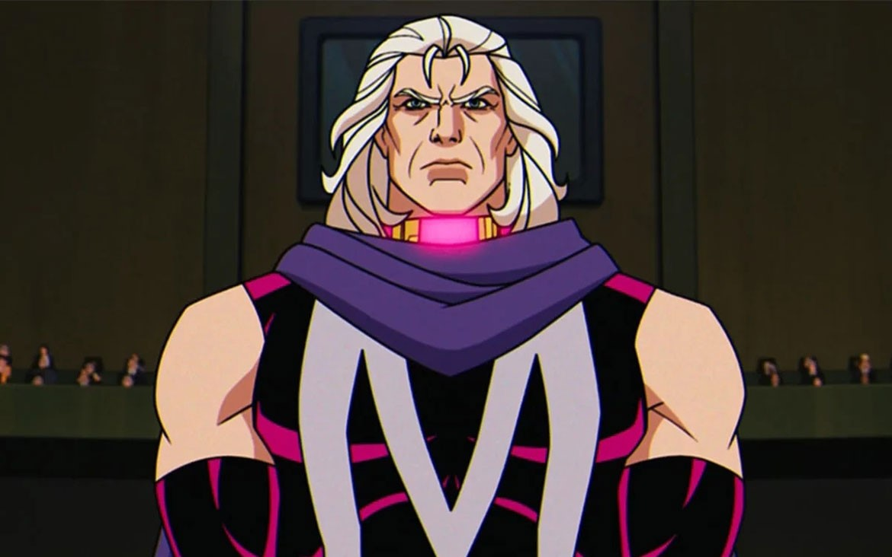
Erik "Magnus" Lehnsherr/Magneto
Ross Marquand como Professor Charles Xavier: O fundador dos X-Men que foi levado ao espaço para ser curado pelo Império Shi'ar após uma tentativa de assassinato. Marquand substitui o dublador original de Xavier, Cedric Smith. Coincidentemente, ambos os atores já deram voz ao vilão da Marvel Red Skull em diferentes projetos. Marquand também dá voz ao Doutor Doom, o líder da Latvéria que é membro da "Operação: Tolerância Zero" (OZT); e Apocalipse, um dos primeiros mutantes que tem milhares de anos e inimigo dos X-Men, substituindo os falecidos John Colicos e James Blendick que dublaram o personagem na série original.
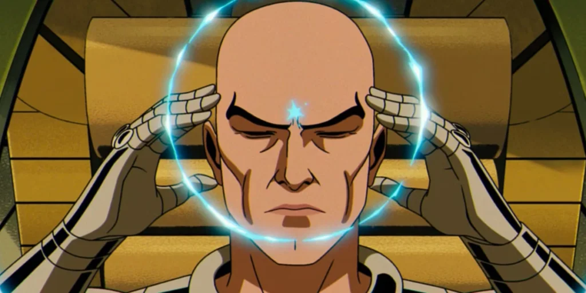
Professor Charles Xavier
Adrian Hough como Kurt Wagner/Noturno: Um mutante católico, azul, com habilidades de teletransporte e mãos e pés preênseis. Hough repete seu papel da série original em X-Men '97 , que inclui a ludicidade do personagem dos quadrinhos. Hough também dá voz a Fortão, um mutante que pode canalizar energia cinética em força física.
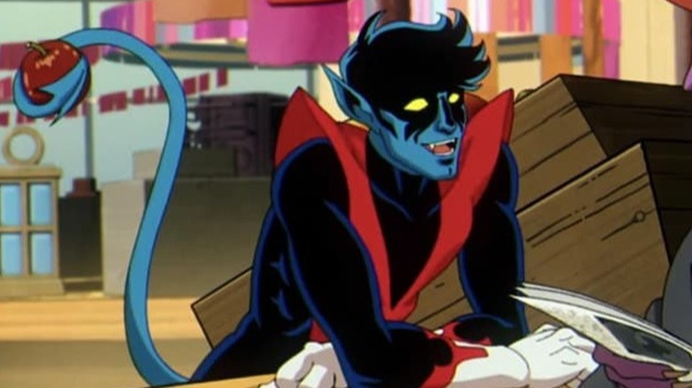
Kurt Wagner/Noturno
Recepção
Audiência
De acordo com a Whip Media, que rastreia os dados de audiência de 25 milhões de usuários mundiais de seu aplicativo TV Time, X-Men '97 foi a nova série mais esperada de março de 2024. A Disney anunciou que o primeiro episódio teve 4 milhões de visualizações em todo o mundo. nos cinco dias seguintes ao seu lançamento, marcando a segunda maior estreia da primeira temporada de uma série animada completa no serviço desde a primeira temporada de What If...? em 2021. De acordo com o agregador de streaming JustWatch , X-Men '97 foi a quinta série de televisão mais assistida em todas as plataformas nos Estados Unidos durante a semana de 18 a 24 de março de 2024. Whip Media informou que o programa foi a segunda série de televisão mais transmitida nos Estados Unidos durante a semana de 14 de abril, a semana de 21 de abril, e a semana de 28 de abril de 2024.
Crítica
X-Men '97 foi aclamado pela crítica. O agregador de resenhas Rotten Tomatoes relatou que os críticos chamaram a série de "o melhor lançamento da Marvel em anos", elogiando "seu estilo nostálgico de animação 2D, escrita inteligente e sequências de ação cativantes". 98% das 63 avaliações são positivas no site, com uma classificação média de 8,8/10. O consenso dos críticos do site afirma: "Realizando a façanha extraordinária de permanecer fiel ao seu amado antecessor enquanto traça um caminho a seguir para a franquia, X-Men '97 é simplesmente excelente." Metacritic, que usa uma média ponderada, atribuiu à primeira temporada uma pontuação de 82 em 100 com base em 14 críticos, indicando "aclamação universal".
Hayden Mears, da TVLine, elogiou o programa por combinar o toque "vintage" com a modernidade de uma "maneira despretensiosa". Francis Agustin, da BBC, acreditava que a série era um afastamento do fortemente interconectado Universo Cinematográfico da Marvel. Alex Abad-Santos da Vox disse que "tudo sobre '97 reflete carinho e consideração, não apenas pelo desenho animado da manhã de sábado , mas também pelos X-Men", elogiando o programa por sua compreensão da fonte material. Brian Lowry da CNN News comentou sobre o tom mais adulto da série e observou como ela conseguiu permanecer fiel à série original, apesar disso. Simon Gallagher da Screen Rant disse "27 anos após o término da série animada, X-Men '97 leva o original ainda mais, adicionando frescor sem trair nada que nos fez amá-lo" e elogiando o programa por sua história, enredos escolhidos e estilo de animação aprimorado.